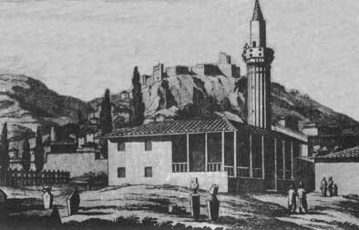

Κοινωνία
 Τα Σάλωνα υπήρξαν αστικό κέντρο και αποτέλεσαν ένα από τα κέντρα της τουρκικής διοίκησης. Ήταν πρωτεύουσα επαρχίας και έδρα βοεβόδα, ο οποίος διοικούσε τον καζά των Σαλώνων. Παράλληλα ήταν και έδρα αρματολικιού, ενώ αποτελούσαν οχυρή θέση με φρούριο και τόπο στάθμευσης ισχυρής φρουράς. Ο πληθυσμός της πόλης ξεπερνούσε τις 500 οικογένειες, με έντονο τουρκικό στοιχείο (περίπου 300 οικογένειες), όπως άλλωστε φαίνεται και από τα 7 τζαμιά που λειτουργούσαν στην πόλη, τα οποία σώζονταν μέχρι τα τέλη του 18ου αι. | |||